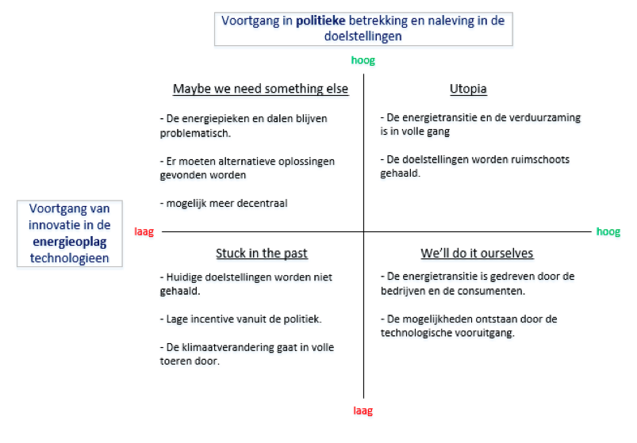

De rol die wij als groep 4 hebben gekozen is de energieopwekker NUON. Wij zijn van mening dat deze rol het meest interessant is en het meeste potentie heeft voor een innovatie opdracht. Op dit front zijn er voor de verduurzaming veel mogelijkheden om de klimaatdoelstellingen van 2030 te halen.
De reden dat we voor NUON hebben gekozen is omdat dit een van de grootse spelers is in de energieopwek industrie. Hier kan dus een grote impact gemaakt worden.
Vervolgens hebben wij 4 scenarios uitgewerkt op basis van 2 drivers:

- Voorgang in politieke betrekking en naleven in de doelstellingen (hoog of laag)
- Voortgang van innovatie in de energieopslag (hoog of laag)
Deze 4 scenarios hebben elk een verschillend toekomstperspectief. Wij denken dat we temaken gaan hebben met scenario “We’ll do it ourselves”. In dit scenario is de voortgang in politieke betrekking en naleving in de doelstellingen laag. Hiervoor is gekozen omdat wij van mening zijn dat de politiek niet de daadwerkelijke driver is van innovatie. Er word veel gedaan maar uiteindelijk komt het neer op subsidie en wetgeving.
Aan de andere kant is de “voorgang van innovatie in de energieopslag” hoog. De technologie groeit tegenwoordig erg snel. Het is onmogelijkom te voorspellen wat voor technologische vooruitgangen de samenleving zal boeken over 10 jaar, maar wij verwachten dat er een innovatie zal opkomen die grote stappen mogelijk maakt naar het behalen van de milieudoelstellingen van 2030.
Implementatie
Om tot een succesvolle implementatie te komen is er een stappenplan opgesteld. Dit stappenplan is opgesteld van begin van projectontwikkeling tot en met het organiseren van draagvlak. Dit stappenplan is opgesteld naar aanleiding van de aanbeveling om grootschalige energieopslag mogelijk te maken. Grootschalige energieopslag is een project wat ongeveer 12 jaar zal duren. Dit implementatiestappenplan is opgedeeld in 6 stappen:
Jaar 1 - 6
1. Projectontwikkeling/voorbereiding
2. Positie Waterstofcentrale bepalen
3. Ontworpen businessmodellen uitwerken en uitvoeren
4. Investeren in windmolenparken (is al gaande)
5. Investeren in waterstofopslag
Jaar 6-12
6. Focus innovatiebeleid op grootschalige opslag en opwekking (Investeren in smartgrid-projecten)
7. Fysieke bouw beginnen aan Waterstof opslagcentrale
8. Waken voor teveel Curtailment tijdens dit proces